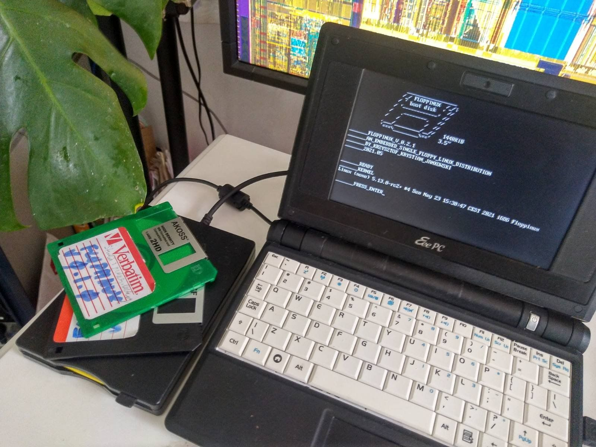

Creating Sample Application on FLOPPINUX
May 25, 2021I created FLOPPINUX distribution for running one application in a KIOSK mode. The user should be unable to close the main application nor run any other software. I will show how I managed to do this using just shell scripts.
My App
I'm working on an old-school diskmag software. In the old days, we get those nice diskmags as interactive and animated magazines with music. I'm doing such a thing in Python for Raspberry Pi. I wrote all the articles in plain text files. That means I could take them and put them on the floppy with a simplified reader. I will not have music and animations, but the standalone, bootable character will make it even more extraordinary. And both versions can live together, sharing just the articles.
Here I write how I made this low-level version using just shell scripts.
Starting Point
Every application needs a starting point. I decided that in my case, it will be /home/main script.
#!/bin/sh
clear
./home/diskmag
cat /home/goodbye
EOF
If the user chooses to exit, the script shows exit messages and quits.
Security by Obscurity
I included only the needed commands like cat, echo, less, etc. There is just not so much to run. The filesystem is unpacked and stored in memory - after restarting, it resets to its initial state. Changing files is also impossible.
The last thing is to escape application. For this, I changed the second line in the /etc/inittab file:
::askfirst:/bin/sh /home/mainAnd last line in /etc/init.d/rc to:
/bin/sh /home/mainImplementation
My application - Nomad Diskmag - needs to do three things:
- show cover
- shows table of contents
- shows selected article to the user (pagination)
I did this using one be one script. Let's recreate it step by step.
Create /home/diskmag:
#!/bin/sh
# NOMAD DISKMAG
# FLOPPINUX EDITION SCRIPT
#First it needs to show a cover:
# COVER
cat /home/cover
read -p "_______PRESS_ENTER" inputIt reads input to stop the script until the user enters anything. I fill the cover file with ASCII art and things like magazine title.
Now the important part - the main loop:
while true; do
clear
cat /home/toc
read -p "_______CHOOSE:" doit
clearIt will run as long as the user chooses "0" to exit. Any wrong answer restarts the loop. Script clears the screen and shows the content of the /home/toc file:
NOMAD_DISKMAG_#0
TABLE_OF_CONTENT
<ASCII ART>
_______[1]_INTRO
_______[2]_WHY_PI
_______[3]_PERFECT_EDITOR
_______[4]_FLOPPINUX
_______[0]_EXIT_______
HINT:(press q to go back from reader)Next in the code you need interpret user inputs:
case $doit in
0) exit ;;
c) cat /home/cover ;;
1) cat /home/txt/intro.txt | less ;;
2) cat /home/txt/why-pi.txt | less ;;
3) cat /home/txt/perfect-editor.txt | less ;;
4) cat /home/txt/floppinux.txt | less ;;
*) clear ;;
esacAnd close the main loop:
doneThe case statement is self-explanatory. To show the article, I chose the most straightforward way - to pipe it to the less command. This way user can scroll/page the text or go to the start/end.
Downloads
All the files are at in the https://github.com/w84death/floppinux/ repository.
Summary
As you see, it is trivial to make a simple embedded application. It does not do much, but you can quickly expand it.